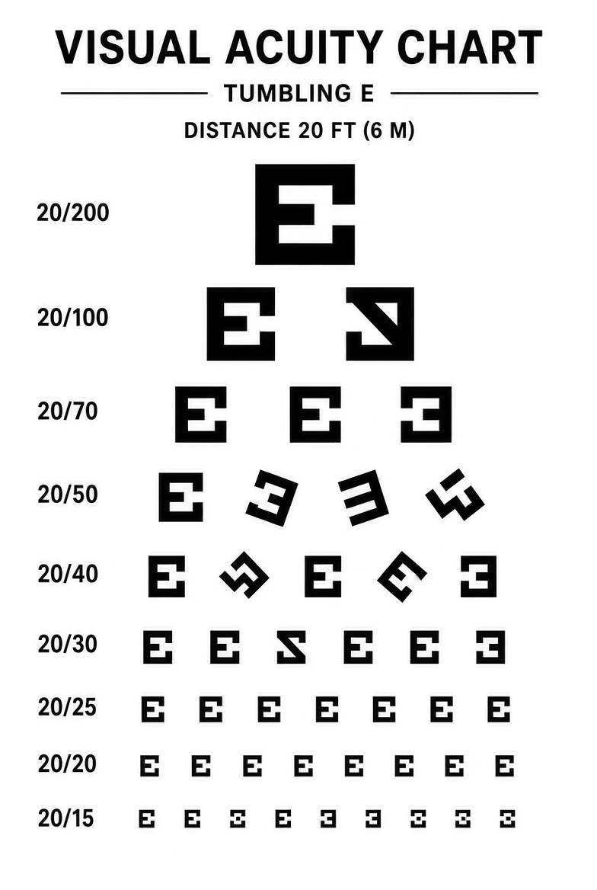

視覺偽人檢測
ALTERNATE VISUAL IDENTIFICATION TEST / 受試者入口
偽人已經學會模仿人的樣子。
你能相信的，只剩自己記得的顏色。
含突發影像與閃爍效果。可隨時關閉閃爍或環境音。
「歡迎來到色彩檢測中心。」
「根據最新報告，偽人無法穩定重現人類的色彩輪廓。我們稱它為視網膜殘像。」
「它不只出現在人身上。熟悉的氣球、小屋，甚至剛才看過的檢查表，都可能被改寫。請依序完成校色與視力檢測；測試期間，請勿回頭查看已封存的影像。」
「如果看見畫面裡多出一個人，請不要告訴他你的名字。」
階段一：色盲檢測板
你看到的數字是什麼？
階段二：色相敏感度
將色塊依正確順序排列（由左至右漸變）。有一格顏色不對，請重新檢查。
內線訊息 / 未驗證來源
值班室呼叫
— 夜班操作員
階段三：視力與散光檢測
請看清圓形影像中的內容，並選擇你看到的。
階段四：視力度數比對
請指出最下面一排你能清楚辨認的符號方向。

階段五 / 視網膜殘像檢查
記憶影像核對
同一份檢測紀錄出現了兩個版本。選出「仍保有原始色彩訊號」的那一張。
最終階段：辨識替換者
下列影像來自今天的檢測紀錄。選出所有「被替換或篡改」的對象。你有一次提交機會。